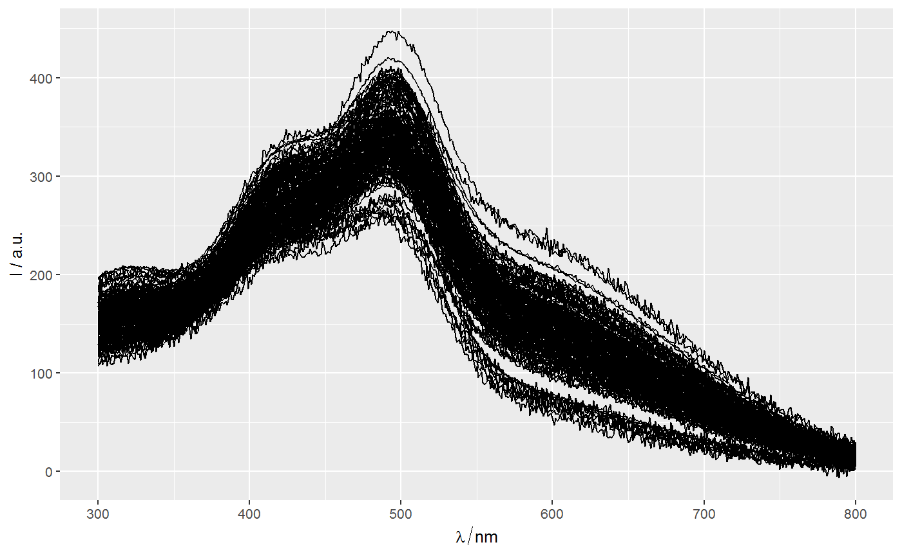
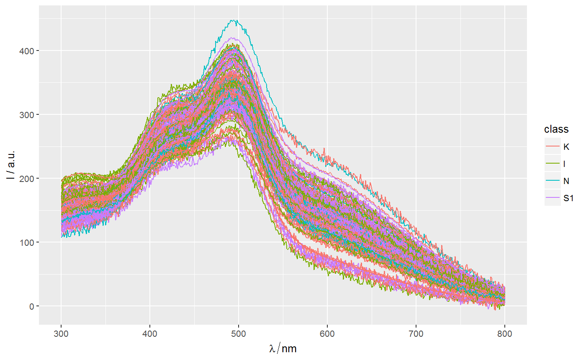
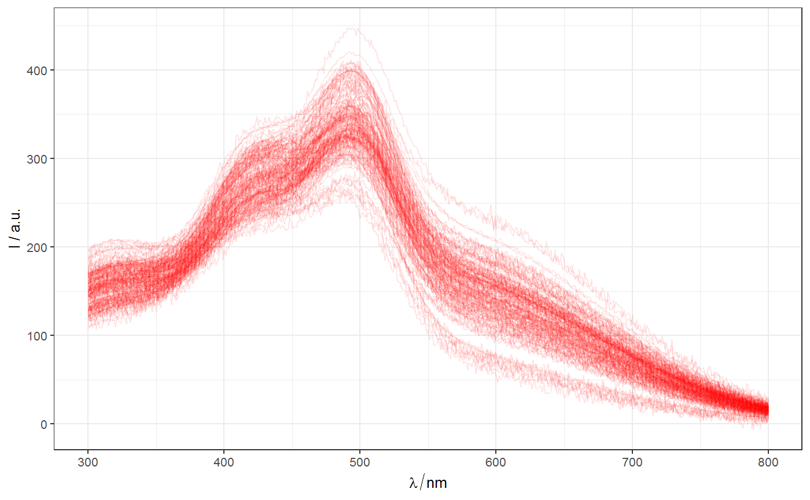
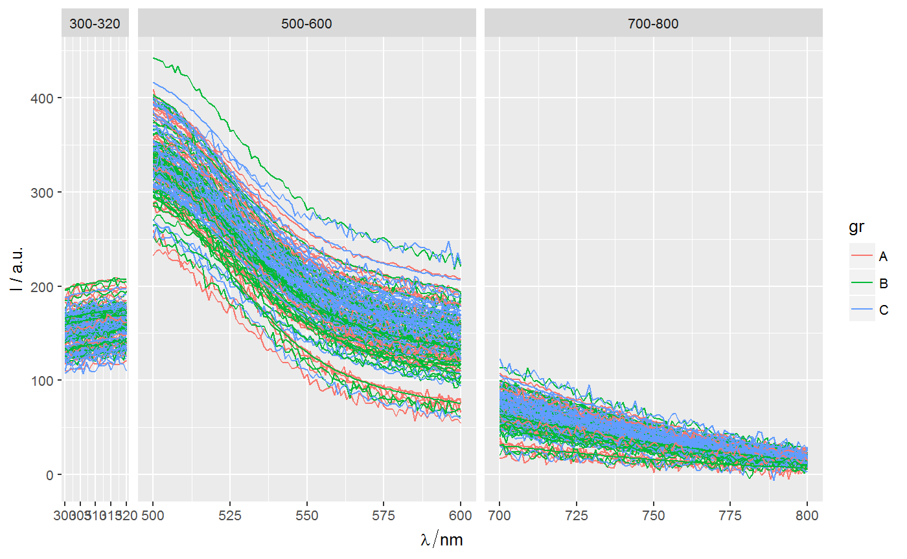
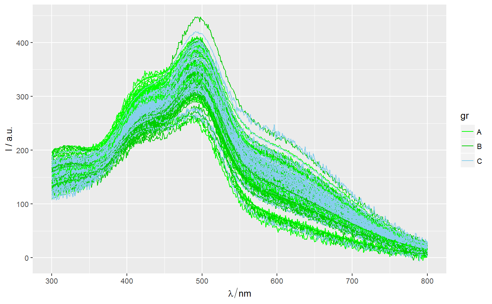
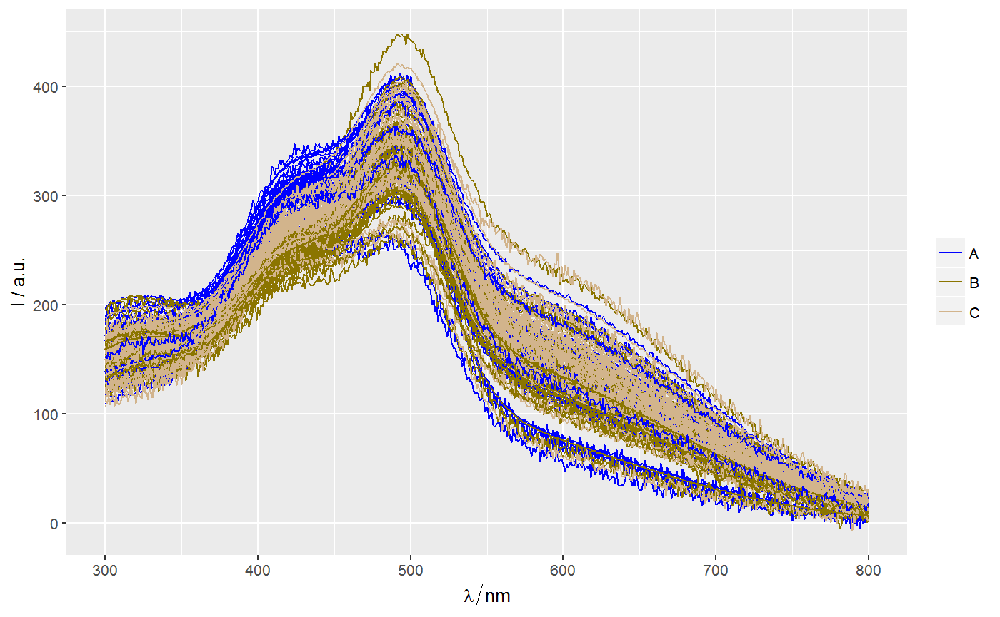
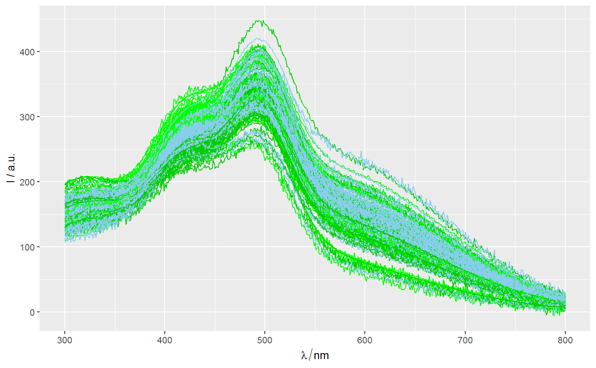
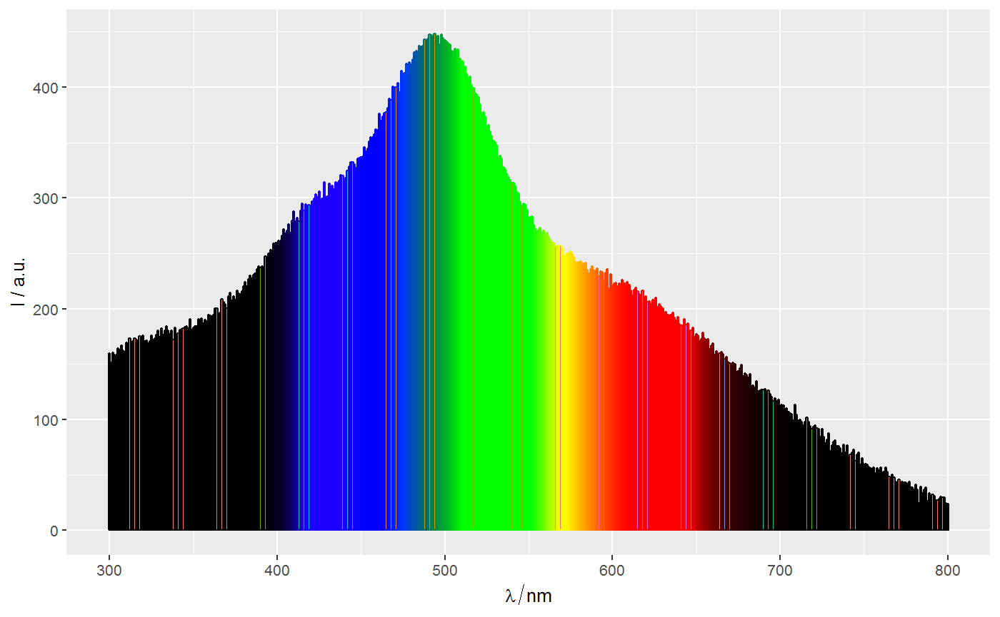

ggplot method for class hyperSpecMethod to create a new ggplot object for class hyperSpec.
More details in ggplot.
# S3 method for hyperSpec ggplot(data, mapping = aes(), ..., wl.range = NULL, palette = NULL, format = "%g", environment)
| data | A |
|---|---|
| mapping | Default list of aesthetic mappings to be used for plotting.
Default values are |
| ... | further arguments to be passed to function
|
| wl.range | wavelength ranges to plot. The ranges will be plotted
as separate columns of facets. Examples in |
| palette | [Expreimental!!!] Color palete for |
| format | A string with format to be passed to |
| environment | Not used yet. |
A ggplot object.
More details in package ggplot2.
qplotspc in package hyperSpec.
ggplot in package ggplot2.
Other spPlot functions for spectroscopy and hyperSpec: facet_wl,
ggLims, gg_palette,
label_expr2text
Other spPlot functions for ggplot2: facet_wl,
ggLims, gg_palette,
nTick
library(spPlot) library(spHelper) data(Spectra2) ggplot(Spectra2) + geom_line()ggplot(Spectra2, aes(color=class)) + geom_line()ggplot(Spectra2) + geom_line(color = "red", alpha = 0.1) + theme_bw()ggplot(Spectra2, wl.range = c(min ~ 320, 500~600, 700 ~ max)) + geom_line(aes(color = gr))Sp2 <- hyAdd_color(Spectra2, "gr", c("green","green3","skyblue")) ggplot(Sp2, palette = TRUE) + geom_line()ggplot(Sp2, aes(color = gr), palette = c("blue","gold4","tan")) + geom_line()ggplot(Sp2) + geom_line(aes(color = I(.color)))